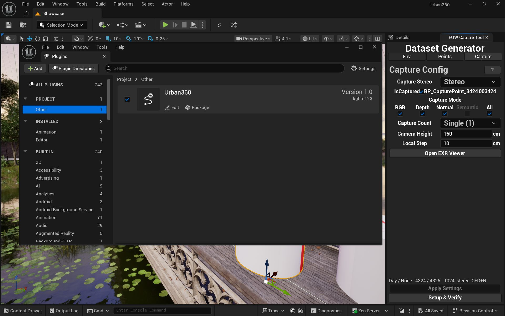
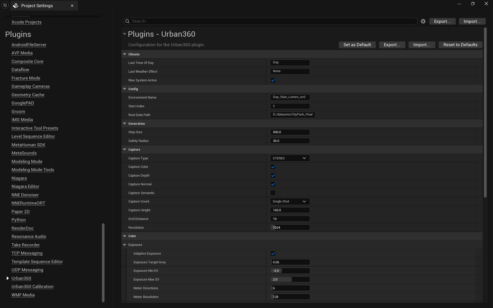

Getting Started
Welcome to the official documentation for the Urban360 Unreal Engine 5 Plugin. This guide covers how to install the plugin and get up and running with generating FP16 panoramic synthetic data.
Introduction & Requirements
The Urban360 Plugin is designed to bypass the complexity of manual camera setups and sequence rendering in Unreal Engine 5. By utilizing a single drop-in actor, it leverages hardware ray tracing (Lumen) to capture perfectly consistent 168-slice panoramic (Equirectangular) data, including RGB, continuous Depth, Surface Normal, and Camera Pose.
System Requirements
- Engine: Unreal Engine 5.7 only.
- GPU: A DirectX 12 GPU with hardware ray tracing (Lumen HWRT is used for reflections). Any GPU that runs the engine can capture RGB/Depth/Normal; the climate and weather VFX are GPU-bound, so an RTX 3060 or better is recommended when those are enabled.
- Project: Any Unreal Engine 5.7 project, including Blueprint-only ones. The plugin ships compiled, so no C++ toolchain and no build step are required.
- Required plugins: Niagara (weather VFX) and Editor Scripting Utilities are enabled as dependencies.
Installation
Urban360 is distributed as a compiled plugin, so there is no build step and it drops into an existing project as it is.
- Download
Urban360.zipfrom the repository. - Create a
Pluginsfolder at the root of your project. Unreal does not create this folder for you, so it will normally not be there yet. - Extract the archive so that the plugin folder (
Sim2RealDataGen) sits directly under<YourProject>/Plugins/. - Open the project, go to Edit > Plugins, search for Urban360, enable it, and restart the editor when prompted. The plugin is then ready to use.

Once enabled, Urban360 appears under Project > Other in the Plugins browser and the Dataset Generator panel becomes available.
Binary distribution
The plugin is released as a compiled binary and its source code is not published. Because a compiled Unreal plugin is tied to the engine build it was made with, this is also why Unreal Engine 5.7 is required rather than merely recommended. Blueprint-only projects are supported, since nothing has to be compiled on your side.
Quick Start
Generating a panoramic dataset is designed to be a straightforward drag-and-drop operation:
- Open the Urban360 tool window and place a Road Spline to define the capture path; Capture Points are generated along it.
- Set the capture options in Project Settings > Plugins > Urban360 (Resolution, Capture Type, Capture Height, output path, and so on).
- Run the capture. The plugin renders 168 slices per view, stitches them through the GeoLUT, and writes the EXR files and the manifest to the output directory.

Capture options live in Project Settings > Plugins > Urban360: the capture type, which modalities to write, the capture count, the camera height, the grid distance and the output resolution. The values above are an example, not the defaults.